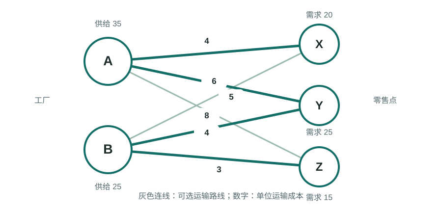

运输问题：把物流决策写成线性规划
两座工厂、三个零售点、有限供给和不同运价。把“怎样发货最省钱”写成一个可检查的线性规划，并验证一组最优运输方案。
问题：货从哪里发到哪里？
一家企业有两座工厂 A、B，需要向三个零售点 X、Y、Z 配送同一种商品。每周供给量分别为 35 和 25 个单位；三个零售点的需求量分别为 20、25 和 15 个单位。每条路线的单位运输成本不同。
总供给量与总需求量都是 60，因此这是一个平衡运输问题。我们希望在满足全部需求、且不超过工厂供给的前提下，让总运输成本最低。

| 单位运输成本 | 零售点 X | 零售点 Y | 零售点 Z | 工厂供给 |
|---|---|---|---|---|
| 工厂 A | 4 | 6 | 8 | 35 |
| 工厂 B | 5 | 4 | 3 | 25 |
| 零售需求 | 20 | 25 | 15 | 60 |
决策变量与线性规划
令 表示工厂 运往零售点 的数量。六个非负变量分别描述六条路线的发货量。目标是“单位成本 × 发货量”求和：
约束分成三类：
- 供给约束：每座工厂发出的总量不能超过它的产能。
- 需求约束：每个零售点收到的总量必须达到需求。
- 非负约束：不能发出负数量的商品。
因为总供给恰好等于总需求，任何满足上述约束的方案都必须把两座工厂的供给全部发出，也必须恰好满足各零售点的需求；否则总量关系无法同时成立。
一组最优运输计划
下面这组发货量满足所有供给和需求：
| 路线 | A → X | A → Y | A → Z | B → X | B → Y | B → Z |
|---|---|---|---|---|---|---|
| 发货量 | 20 | 15 | 0 | 0 | 10 | 15 |
工厂 A 发出 20+15+0=35；工厂 B 发出 0+10+15=25。零售点 X 收到 20，Y 收到 25，Z 收到 15。总成本为：
为什么它是最优的？
只展示一组可行方案还不够；我们还需要证明没有更便宜的方案。令工厂 A 发往 X、Y、Z 的数量分别为 a、b、c。由于总供给和总需求相等，工厂 B 的发货量由需求剩余量唯一确定：
工厂 B 发往 X、Y、Z 的数量分别是 20−a、25−b、15−c。将它们代入总成本：
同时，工厂 A 的供给约束给出 a+b+c=35，而发往 X 的数量不能超过 X 的需求，即 a≤20，所以 b+c=35−a≥15。由于 b、c 非负：
前面给出的方案恰好达到 255，因此它是这个线性规划的全局最优解。等号要求 a=20、b=15、c=0，正好得到表中的运输计划。
为什么这里能证明全局最优？我们没有依赖“算法跑出来的数字”，而是把目标函数化简，再用约束推出所有可行方案的成本下界。数值求解器应当给出与这个独立推导一致的结果。
沿可行方案移动
调整 A→X 的发货量。为了让滑块始终展示可行方案，演示程序会先用 A 的剩余供给满足 Y，再把剩余量分配给 Z，并由需求计算 B 的发货量。这个控制只探索一族可行方案，不是通用运输算法。
运输方案成本检查器
Python：穷举小规模整数方案
程序枚举工厂 A 发往 X、Y 的整数数量，并由供给平衡计算 A→Z，再由需求平衡计算工厂 B 的剩余发货量。它验证了示例计划和成本。这个穷举程序只适合很小的整数教学例子；实际规模应使用线性规划或最小费用流算法。
"""Enumerate a small integer transportation instance.
The algebraic argument in the article proves the continuous LP optimum.
This finite enumeration independently checks the displayed integral plan.
"""
SUPPLY = (35, 25)
DEMAND = (20, 25, 15)
COST = ((4, 6, 8), (5, 4, 3))
def best_integer_plan():
best = None
for ax in range(DEMAND[0] + 1):
for ay in range(DEMAND[1] + 1):
az = SUPPLY[0] - ax - ay
if not 0 <= az <= DEMAND[2]:
continue
bx = DEMAND[0] - ax
by = DEMAND[1] - ay
bz = DEMAND[2] - az
if min(bx, by, bz) < 0 or bx + by + bz != SUPPLY[1]:
continue
plan = ((ax, ay, az), (bx, by, bz))
cost = sum(plan[i][j] * COST[i][j]
for i in range(2) for j in range(3))
if best is None or cost < best[0]:
best = (cost, plan)
return best
if __name__ == "__main__":
cost, plan = best_integer_plan()
print("minimum cost:", cost)
print("factory A:", plan[0])
print("factory B:", plan[1])
assert cost == 255
assert plan == ((20, 15, 0), (0, 10, 15))
assert sum(plan[0]) == SUPPLY[0]
assert sum(plan[1]) == SUPPLY[1]
assert tuple(plan[0][j] + plan[1][j] for j in range(3)) == DEMAND
建模扩展与练习
现实中的运输模型可能还包含路线容量、固定启用成本、运输时间窗、不同商品、车辆类型或供给不平衡。若总供给大于总需求，允许剩余库存时供给约束可以保持为不等式；若供给不足且需求必须满足，则模型不可行，需要引入缺货变量或调整需求约束。
练习：若 A→Z 的单位成本从 8 降到 2，其他数据不变，原方案还会是最优解吗？请重新化简成本并给出新的最优运输计划。
自检方向：新成本会鼓励 A 把更多货发往 Z；但 A→X 的需求上限和 A 的总供给仍然限制可选方案。可用 Python 枚举程序把成本矩阵中的 8 改为 2 后验证。
参考资料
- Jorge Nocedal, Stephen J. Wright, Numerical Optimization, 2nd ed., Springer, 2006，Chapter 1 “Example: A Transportation Problem”。出版社书目。
- 本文使用的供给、需求和单位成本是独立构造的教学数据；不代表教材原例中的数据。